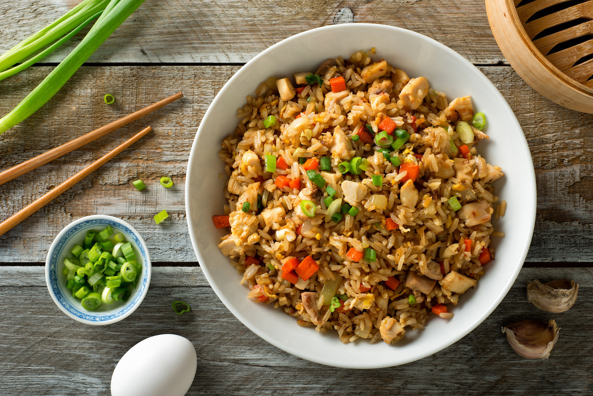

Perfect Fried Rice
This perfect fried rice will bring a savory twist to your mouth upon which's impact your tongue will always long for such a taste again! You can also use this to rizz up your friends.

Ingredients
- 2 tablespoons sesame oil (or vegetable oil such as canola), divided
- 1 large egg, beaten
- 2 slices bacon, diced
- 2 cloves garlic, minced
- ½-inch piece fresh ginger, minced
- 2 green onions, thinly sliced, whites and greens separated
- ¼ cup frozen peas
- 1 carrot, peeled and diced
- 2 cups day-old rice
- ⅛ teaspoon white pepper
- 1½ tablespoons soy sauce
Steps
- In a wok (or large cast iron or nonstick skillet) over medium-high heat, heat 1 tablespoon sesame oil until shimmering. Add beaten egg and cook, folding several times with a spatula until no longer runny, about 1 minute. Transfer scrambled eggs to a plate.
- Add bacon to the wok and cook until crispy and the fat has rendered, about 2 minutes. Add garlic, ginger, and scallion whites and stir-fry until fragrant, about 1 minute. Add frozen peas and carrot and stir-fry until peas have defrosted, about 1 minute longer. Add the rice and scallion greens and stir to distribute ingredients and break up any cold rice clumps.
- Cook, undisturbed, until rice begins to brown, about 3 minutes. Meanwhile, in a small bowl, whisk together white pepper, soy sauce, and remaining sesame oil. Drizzle sauce over rice and stir to combine. Continue to cook, undisturbed, until the bottom of the rice becomes crispy, about 2 more minutes.
Home
Special thanks to my buddy $$$ which helped make this recipe, if it wasn't for $$$, I wouldn't have the ingredients at all! Thanks again, $$$